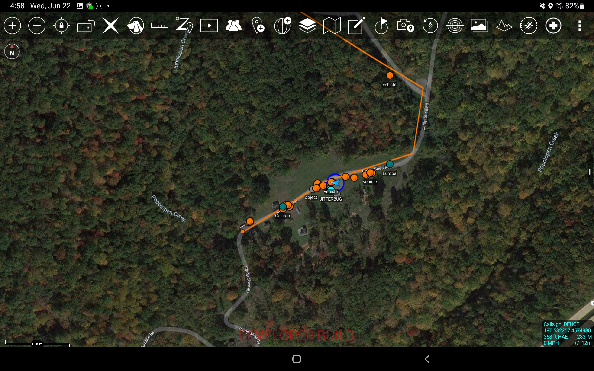
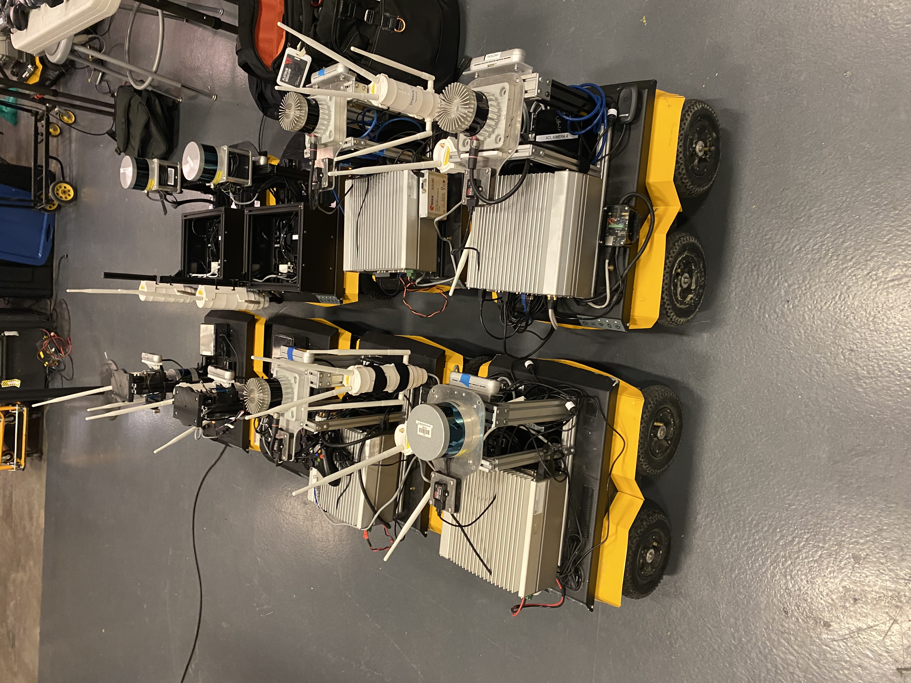
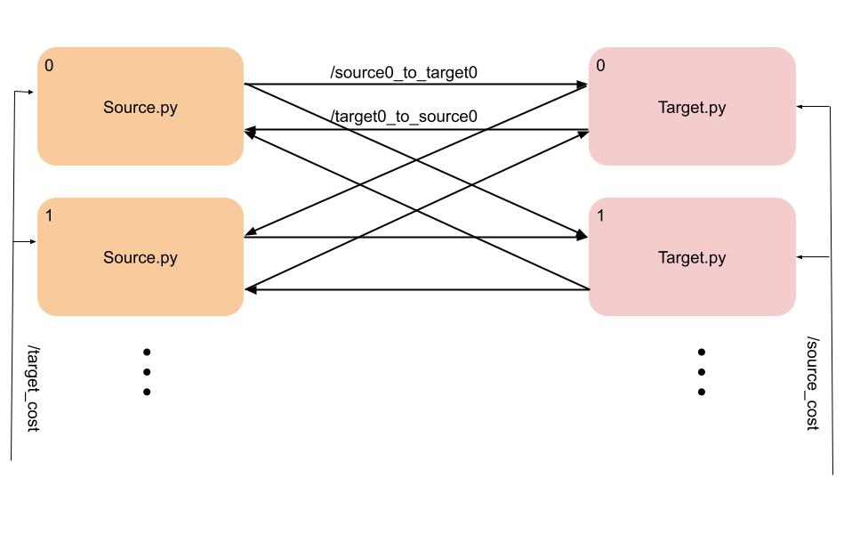
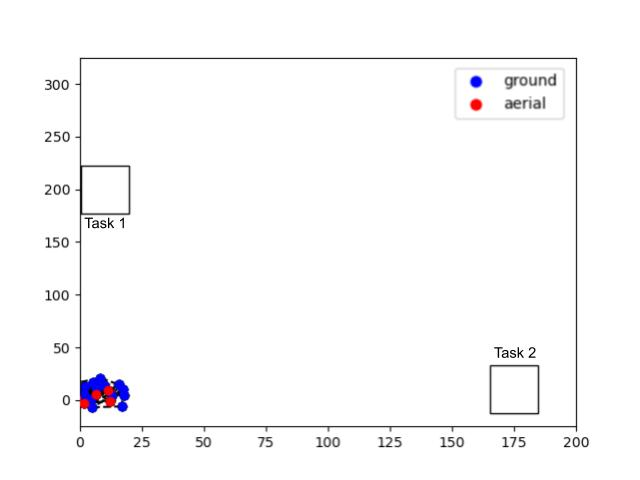

ROSTAK -- 2022 - Present
 
I helped build the rostak repo at the Robotics Research Center as a part of the Army Research Labs DCIST project. rostak is a ROS to CoT (Cursor on Target) message bridge, built
so that robot information such as a robot's location, object detections and localizations can be published to the Tactical Awareness Kit (TAK).
The CoT messages can be sent to the TAK server so that they will be display on the TAK device. The repo is available here.
A ROS implementation of Distributed Optimal Transport. There are two types of nodes, target nodes and sources nodes. Sources nodes are supposed to provide target nodes with some resource. This can also be thought of more abstactly, where the algorithm converges to some sort of cost or score between the nodes. ROSDOT will automoatically create topics between source and target nodes in both directions, they take on the name of /source0_to_target0 and /target0_to_source0 and so on for every connection. This repo can be used in two ways: 1) run a simulated networked system on a single machine, 2) run an individual target or source node.
As the prevalence of adversarial attacks to multi-robot systems rises, increasing the resiliency of these systems such that the agents can continually remain connected during task executions is highly important.
The existing state of the art is to leverage k-connectivity to ensure mobile agents remain within communication range. We address the shortcoming of this method in heterogeneous multi-robot systems by considering how agents in a systems can maintain either a k1-connectivity or k2-connectivity, because some agents may need to maintain a higher level of connectivity to the system as they are more prone to attackers or more fragile. In the proposed system, agents that require more resiliency would maintain k2-connectivity, while others would maintain k1-connectivity. Constructing an optimal network is shown to be NP-hard, thus in order to construct such a network we leverage Harary Networks and heuristics. We incorporate our network into a minimally invasive control algorithm so the agents can maximize their mobility. Finally, we show the effectiveness of the designed algorithm through simulation.
As a graduate student I conducted research in the Juntao Chen Research Group in Fordham University's Computer and Information Science Department. In this group we first applied a fairness metric to distributed discrete optimal transport for so a more fair resource Allocation scheme could be computed.
We then constructed a discrete distriubted OT algorithm that considers the possibility that nodes could be compromised and misrepresent their constraints to the other nodes in the network.
Next, we incorporated differential privacy into the distributed OT paradigm. Since nodes broadcast their information to other nodes, that could be used to trace back sensitive data. Finally, we considered
developed an algorithm for the security investment problem from multiple sources to multiple targets. I also advised undergraduateson the application of
distibuted OT to secuirty investment applications. Finally, we considered the application of a fair and optimal allocation of covid-19 vaccine.
I started out working in the Robotics and Computer Vision lab as a research assistant helping a master's student with his work on drone to drone wind detection. We gathered IMU data from one drone flying underneath another. The data from the drone underneath as well as control data was then fed the data to a classification program to see if the computer could predict when a drone was overhead after it trained on the data.
ROSDOT -- 2022

Multi-Layered Heterogeneous Connectivity -- 2022


Master's Research -- 2020-2021


Undergraduate Research -- 2019 - 2020


I took over as the lead researcher on the next portion of the project, looking at if data gathered from the drone's IMU when it is flying near walls could be used to predict the presence of a wall in a flight path. To do this we gathered data from the drone when it was flying with a wall to its left, right and front. Then I built a classifier and feature generator for the computer to train and test on with the data.
We found that when using a RandomForest classifier, we can accurately predict which side a wall is on in relation to the drone with above 90% accuracy. This means this could be a potential replacement for more power-hungry radar and camera sensors when building autonomous drones.